Fiji overview#
{kind=link}
Fig. 1 Fiji#
Fiji is an image processing package—a “batteries-included” distribution of ImageJ, bundling a lot of plugins which facilitate scientific image analysis.
About Fiji#
Initially, the core of Fiji was ImageJ (https://imagej.nih.gov/ij/), an image analysis program extensively used in the biological sciences. ImageJ was originally developed by Wayne Rasband at the National Institutes of Health (NIH) and first released in 1997. Due to its ease of use and the plug-ins architecture, ImageJ has seen innumerable contributions over the years that have massively extended its functionality.
A recent collaborative project, ImageJ2 (https://imagej.net/software/imagej2/), is redesigning the ImageJ foundations to allow for better separation between data model and user interface, support for N-dimensional datasets, strong focus on interoperability with other scientific tools, while still maintaining backwards compatibility with the original ImageJ software. ImageJ2 has recently replaced ImageJ at the core of Fiji.
Fiji is released as open source under the GNU General Public License.
Project website: http://www.fiji.sc
References#
Schindelin, J.; Arganda-Carreras, I. & Frise, E. et al. (2012). Fiji: an open-source platform for biological-image analysis. Nature methods 9(7): 676-682.
Schindelin J, Rueden CT, Hiner MC, Eliceiri KW. The ImageJ ecosystem: An open platform for biomedical image analysis. Mol Reprod Dev. 2015 Jul-Aug;82(7-8):518-29.
Curtis T. Rueden, Johannes Schindelin, Mark C. Hiner, Barry E. DeZonia, Alison E. Walter, Ellen T. Arena, Kevin W. Eliceiri. ImageJ2: ImageJ for the next generation of scientific image data. (https://arxiv.org/abs/1701.05940)
Acknowledgments#
Many of the examples in this section are taken (with permission) or are heavily inspired by Cameron Nowell’s awesome Fiji Training Notes (Monash University, Melbourne).
Documentation#
Getting started guide: https://imagej.net/Getting_Started
User guides: https://imagej.net/User_Guides
Tutorials: https://imagej.net/Category:Tutorials
The user interface#
{kind=link}
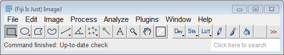
Fig. 2 Fiji’s user interface#
The various operations in Fiji are accessible via the menu and the toolbar.
Toolbar#
The toolbar contains functionality for interactive work on the image. We will have a look at some of those tools when we move to specific topics in the course.
{kind=link}
Fig. 3 The Fiji toolbar#
Finding commands#
Commands in Fiji are scattered all over the place: if you know what you need but cannot remember where it is, you can type some keyword in the search bar and the Quick Search tool will provide you with a list of commands in Fiji and even information from the ImageJ Wiki and Forum.
{kind=link}
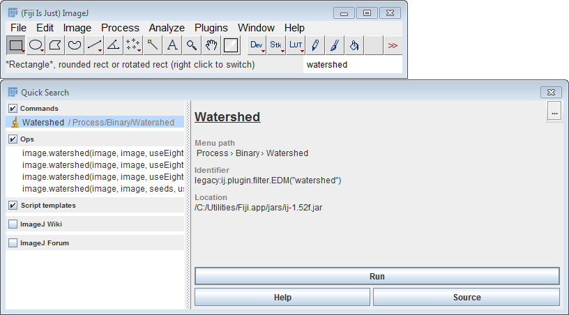
Fig. 4 The command finder#
Basic functionality#
Opening files#
You can open files from File > Open or File > Import or by dragging a file from the Windows Explorer onto the Fiji window. A series of example images can be accessed from File > Open Samples.
Saving files#
Open images in Fiji can be saved to disk using File > Save as: several formats are supported. Recommended for scientific images is the TIFF format.
Image calibration#
When loading an image into Fiji for measurements, it is essential that the image calibration is correct. You can open the image properties window from the Image > Properties menu. Make sure that the pixel width and height and the voxel depth (i.e., the distance between planes in a 3D acquisition) have the correct size; in case of time acquisition, also make sure that the frame interval is correct.
{kind=link}
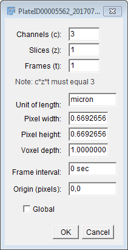
Fig. 6 Image calibration#
Regions of interest (ROIs)#
Regions of interest (ROIs) are used to select a portion of the image for analysis or for other activities. Fiji supports several different types of ROIs.
{kind=link}
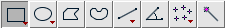
Fig. 7 The ROI toolbar#
The ROIs are divided into a number of classes: rectangular, circular, polygon, freehand, line, angle and wand tools. The small triangle at the bottom of some of the tools indicate that there are several variations: for instance, the circular tool can be expanded (with a right-click) to reveal a choice of Oval selections, Elliptical selections, and the Selection Brush Tool. Double clicking on a tool opens its settings dialog.
ROIs can be combined by holding the SHIFT key and subtracted from each other with the ALT key.
ROI Manager#
Fiji allows one ROI to be added to the image at a time. To add and manage more ROIs, the ROI Manager may be used. You can access it from the Analyze > Tools > ROI Manager… menu.
{kind=link}
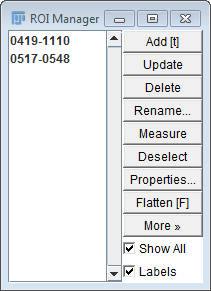
Fig. 8 The ROI manager#
To add ROIs to the manager, you hit the Add button after drawing each ROI. Click on Show all to display all ROIs on current image.
Data types#
Fiji supports several data types. They can be accessed from Image > Type.
Data type |
Description |
|---|---|
8 bit |
Unsigned integer 8 bit (0 .. 255) |
16 bit |
Unsigned integer 16 bit (0 .. 65535) |
32 bit |
Single-precision floating point |
8 bit Color |
Indexed 8 bit color image |
RGB Color |
Full color image, 3 channels Red, Green, Blue |
RGB Stack |
3 separate channels, for Red, Green and Blue components |
HSB Stack |
Image in HSB color space (Hue, Saturation and Brightness) |
Lab Stack |
Image in Lab color space (Luminance and 2 color channels) |
Some data types are completely inter-convertible. Some may cause information loss.
Look-up tables (LUTs)#
In our course we will concentrate on single- or multi-channel intensity images, such as those obtained from a light microscope. The only information stored in such an image is the intensity of the original signal (e.g., fluorescent light) at each pixel position. By default, then, intensity images are displayed as gray-scale images with black pixels mapped to the intensity 0 and white pixels mapped to 255 (for 8-bit images) or 65535 (for 16-bit images).
Often, however, microscopy images were taken for more than one channel. Each channel collected the light from a different fluorophore. GFP emits light in the green range of wavelengths of visible light; DAPI in the blue; Rhodamine B in the red; YFP in the yellow, and so on.
When displaying more than one channel at the same time in a composite image, we want to make use of their original colors to distinguish the different contributions and study possible colocalization of fluorescent proteins.
A lookup-table is a mapping of intensity values to a given color in a table. You can access a series of predefined LUTs from the Image > Lookup Tables menu or from the toolbar (the LUT tool).
LUTs can be monochromatic (as for instance Grays, Red, Green, or Blue) or multi-color.
{kind=link}
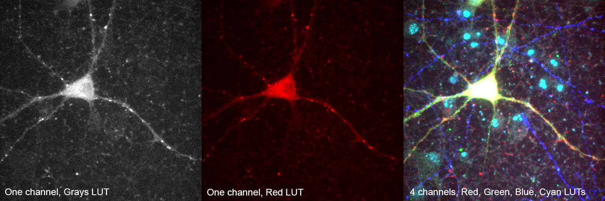
Fig. 9 Lookup tables (for the Neuron sample image)#
Image histogram#
Let’s have a look at the histogram of an image. Open data/fiji/histogram/FITC.tif in Fiji.
{kind=link}
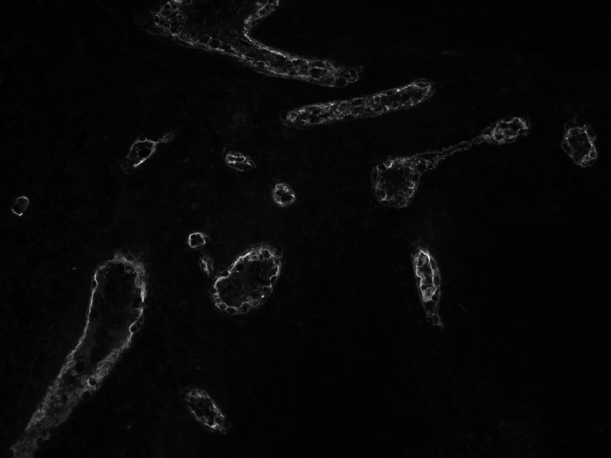
Fig. 10 The FITC.tif image#
Now have a look at its intensity distribution: Analyze > Histogram.
{kind=link}
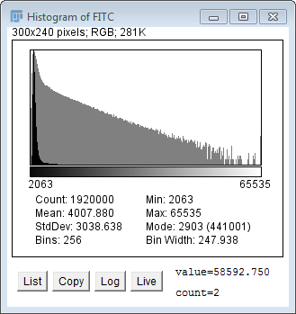
Fig. 11 Histogram of FITC.tif#
Hit the Log button to superimpose the histogram in logarithmic scale (gray) on top of the one in linear scale (black). The black curve shows that most intensities are very dark, which is to be expected since the image is mostly background. The logarithmic scale shows us that there are still some pixels that cover all the range up to 65535; they are just very few.
Adjusting brightness and contrast#
Histogram stretch#
To adjust the contrast of the FITC.tif image, pick Image > Adjust > Brightness/Contrast. Set the maximum at around 20000.
{kind=link}
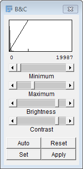
Fig. 12 Histogram stretch#
While you move the sliders, the image contrast will update in real time. Be aware that the actual pixel intensities in the image are left untouched!
{kind=link}
Fig. 13 FITC image with maximum at 19987#
The Brightness & Contrast tool offers three options:
Auto: automatically set minimum and maximum intensity values to give an optimal contrast
Reset: reset the minimum value to 0 and the maximum to the maximum allowed value of the data type
Apply: change the pixel intensities in the image to fit the new range. Careful: this modifies your image!
For this exercise, we will hit Apply. Then, apply the HiLo lookup table. All pixels appearing in blue are pixels at value 0, and all pixels appearing red are pixels at the maximum value for the data type. If you see too many red pixels, it means that you probably went too low with the maximum and saturated the pixels!
{kind=link}
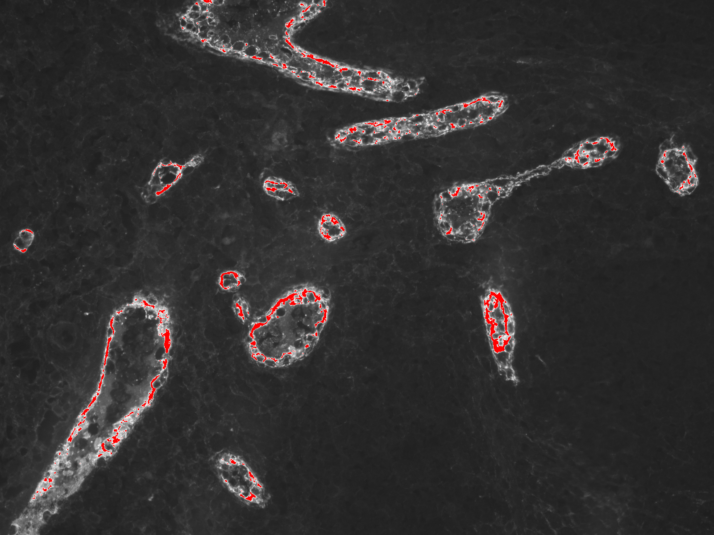
Fig. 14 FITC image with maximum at 19987#
Histogram equalization#
Histogram equalization Fiji is launched via Process > Enhance Contrast.
{kind=link}
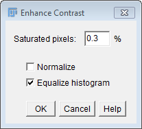
Fig. 15 Parameters for histogram equalization#
Optionally, one can ignore the very dark and very light pixels by setting a fraction (in %) of saturated pixels that are left out from the equalization (they will be set to 0 and the max intensity value of the data type, respectively). Notice, that Normalize performs histogram stretch as we have seen in the Brightness & Contrast tool. If one unchecks both options, the contrast is normalized only for display.
{kind=link}
Fig. 16 FITC.tif after histogram equalization#
Filters#
In this section, we will test several filters on the data/fiji/filters/actin.tif image.
{kind=link}
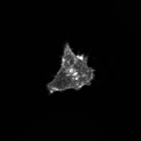
Fig. 17 The actin.tif image#
Notice that the actin.tif image has the following calibration: 1 pixel = 0.467 \(\mu m\).
Spatial filters#
Linear filters#
Images are filtered in the spatial domain by the operation of convolution with a kernel whose weights are carefully selected to perform a specific transformation on the pixel of the image. Fiji implements a series of linear filters in the Process > Filters menu.
Average filter#
We will start by running an average filter on the actin.tif image by defining our own \(5x5\) kernel in Process > Filters > Convolve. We need a filter with homogeneous weights that sum up to 1.
Luckily, Fiji can do the normalization for us, and we can just type the \(5x5\) ones in the dialog:
{kind=link}
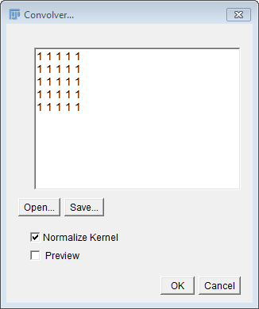
Fig. 18 \(5x5\) average filter (to be normalized by Fiji)#
The convolution with our average filter gives us the following result:
{kind=link}
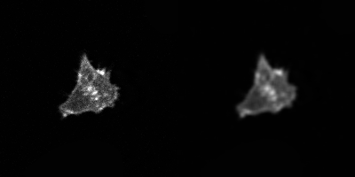
Fig. 19 Average filter#
Notice that Fiji also offers the Process > Filter > Mean... filter, that uses an average filter of approximately circular shape (by setting all weights farther away than one radius of the circle from the center of the kernel to zero).
Gaussian filter#
We could run a Gaussian filter on the actin.tif image by defining a \(5x5\) kernel in Process > Filters > Convolve, but it is much easier to use the Process > Filter Gaussian Blur.... The only parameter to the Gaussian kernel is its \(\sigma\) value, but please notice the it can be specified either in pixels or in units.
{kind=link}
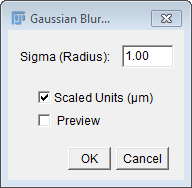
Fig. 20 Options of the Gaussian filter#
The convolution with our Gaussian filter gives us the following result:
{kind=link}
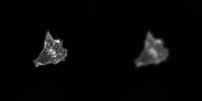
Fig. 21 Gaussian filter#
Laplacian filter#
To run a Laplacian filter on the actin.tif image, we first change the data type to Image > Type > 32-bit, since the Laplacian creates negative values in the image that would be clipped if the image were 8 bit. Then we can define our kernel (without normalization!) in the Convolver window.
{kind=link}
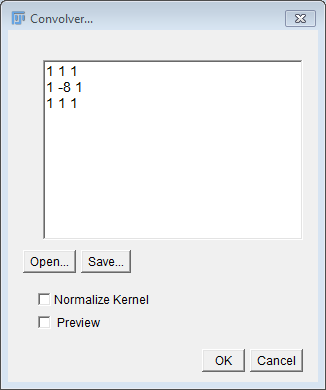
Fig. 22 Options of the Laplacian filter#
The convolution with our Laplacian filter gives us the following result:
{kind=link}
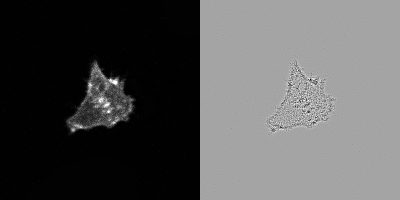
Fig. 23 Laplacian filter#
Laplacian of Gaussian filter#
In analogy to the previous filter, to run a Laplacian of Gaussian filter on the actin.tif image, we first change the data type to Image > Type > 32-bit, since the Laplacian creates negative values in the image that would be clipped if the image were 8 bit. We could first filter with a Gaussian filter and then apply the Laplacian; instead, we use the Plugins > FeatureJ > FeatureJ Laplacian plug-in.
{kind=link}
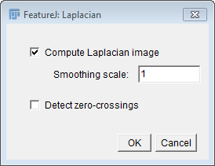
Fig. 24 Options of the Laplacian of Gaussian filter#
The smoothing scale is the \(\sigma\) value of the Gaussian kernel.
The convolution with our Laplacian of Gaussian filter gives us the following result:
{kind=link}
Fig. 25 Laplacian filter#
Non-linear filters#
Non-linear filters cannot be implemented by the convolution operator, since as their name implies, they do not perform any linear operation (i.e., additions and multiplications) on the pixel neighborhood.
Order filters#
The min, median and max filters can be run with the Process > Filters > Minimum..., Process > Filters > Median..., and Process > Filters > Maximum... commands, respectively. All filters take the radius as input argument:
{kind=link}
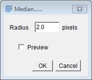
Fig. 26 Median filter options#
The result of the order filter on the actin.tif image looks as follows:
{kind=link}
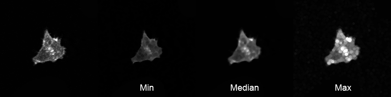
Fig. 27 Order filters#
Frequency filters#
Filtering in the frequency domain consists of modifying the Fourier transform of an image and then computing the inverse transform to obtain the processed result. We will not discuss frequency filters further in this course.
Background subtraction#
There are many reasons why one might want to run a background subtraction before analysis. In microscopy acquisitions, it is common for images to display a reduced intensity away from the center of the image. This so called shading can make it more difficult to segment objects unless one uses a local thresholding strategy. For ratiometric analyses, where one locally calculates the ratio of the signal between two channels, any intensity offset due to unspecific light in the background must be removed; otherwise, especially for weak signals, the ratio of the background values dominates the overall ratio!
Open the image data/fiji/background/cell_shaded.tif.
{kind=link}
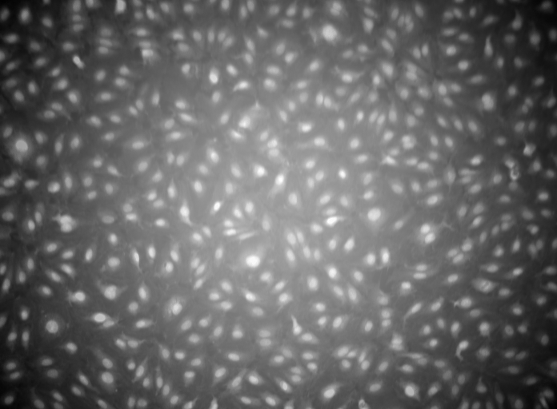
Fig. 28 The shaded image#
Open Process > Subtract Background....
{kind=link}
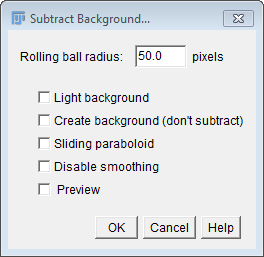
Fig. 29 The Subtract Background tool#
You can Preview the changes or even see the estimated background before subraction (Create background (don't subtract)). Hit OK when you are done.
{kind=link}
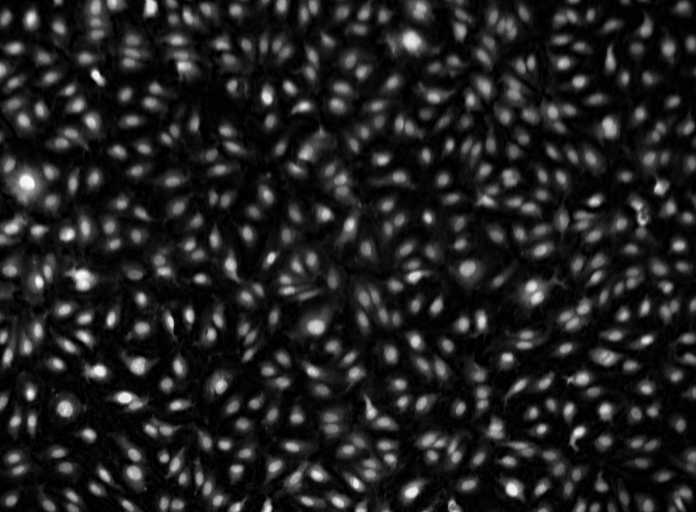
Fig. 30 The background-subtracted image#
Segmentation#
Simple threshold-based segmentation#
Often we want to extract objects from images with the goal of measuring several features that we can use to test some hypothesis. It is important then, to preserve their shapes as much as possible. Ideally, the objects have a (more or less homogeneous) intensity that is clearly higher than the local background surrounding them.
Open the image data/fiji/segmentation/Nuclei.tif.
{kind=link}
Fig. 31 Nuclei.tif image#
To segment, use Image > Adjust > Threshold.... Choose the Otsu algorithm. A preview of the segmentation will be overlaid on top of the image.
{kind=link}
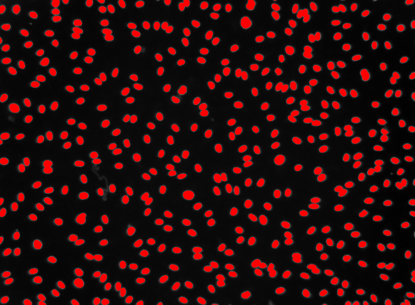
Fig. 32 Segmentation preview#
In this dataset, the Otsu algorithm performs satisfactorily. If the intensity of the objects tends to vary a lot, however, Otsu might perform sub-optimally.
Compare the Otsu segmentation with the one obtained by the Li or the Triangle algorithms. These algorithms are particularly robust to segment objects that have a wide range of intensities.
{kind=link}
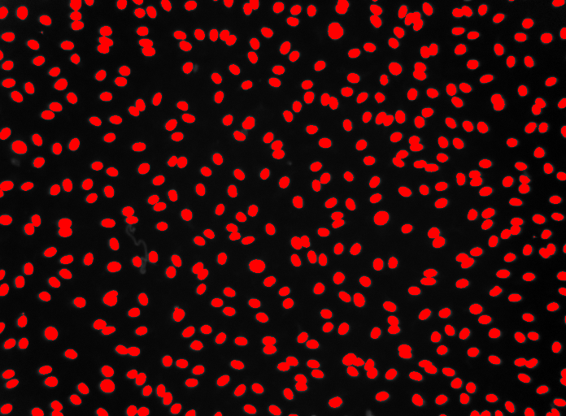
Fig. 33 Segmentation with the Li algorithm#
Hit Apply to create a black and white mask that we can later use for analysis (in a later section).
Pre-processing for segmentation#
In case the threshold-based segmentation does not perform well, one can try to pre-process the image with some of the filters we have seen before. For instance, a Gaussian filter can help reduce noise in the image and make the objects more homogeneous.
Open the image data/fiji/segmentation/Nuclei_patchy.tif.
{kind=link}
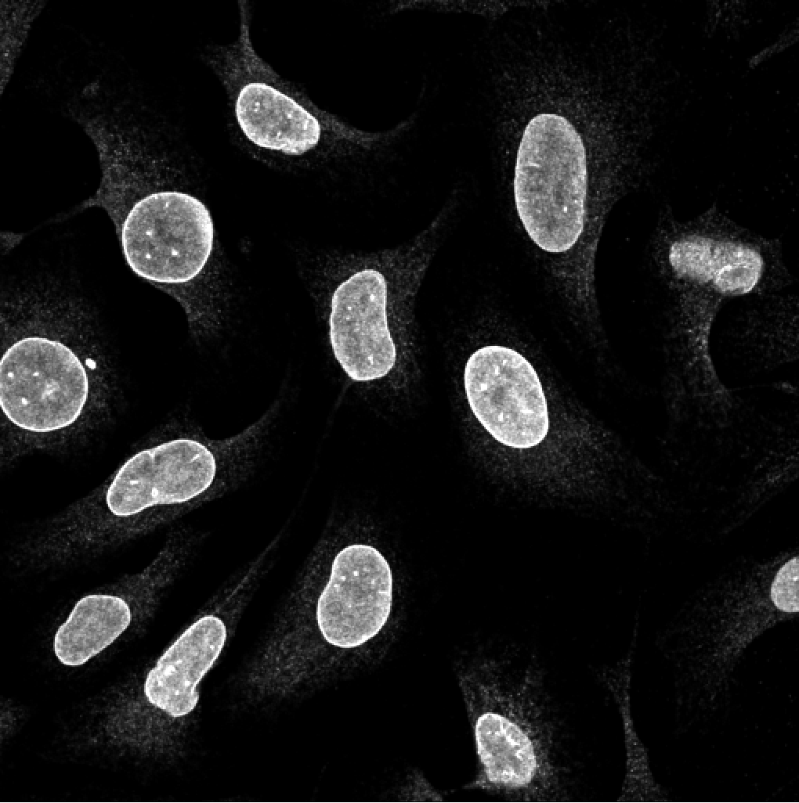
Fig. 34 Nuclei_patchy.tif image#
If you try to segment this image with a threshold, you will see that the segmentation is not very good.
{kind=link}
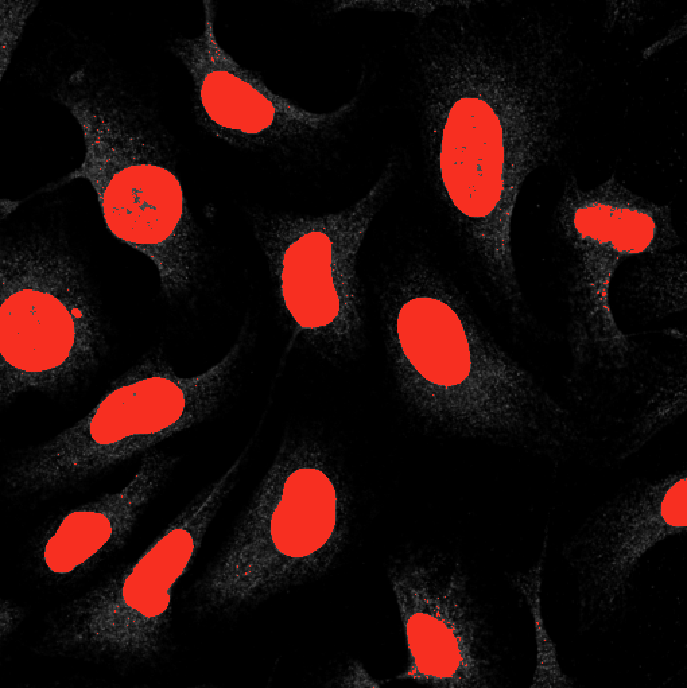
Fig. 35 Thresholded Nuclei_patchy.tif image#
However, after filtering the image with a Gaussian filter with \(\sigma = 2\) pixels, the segmentation improves significantly.
{kind=link}
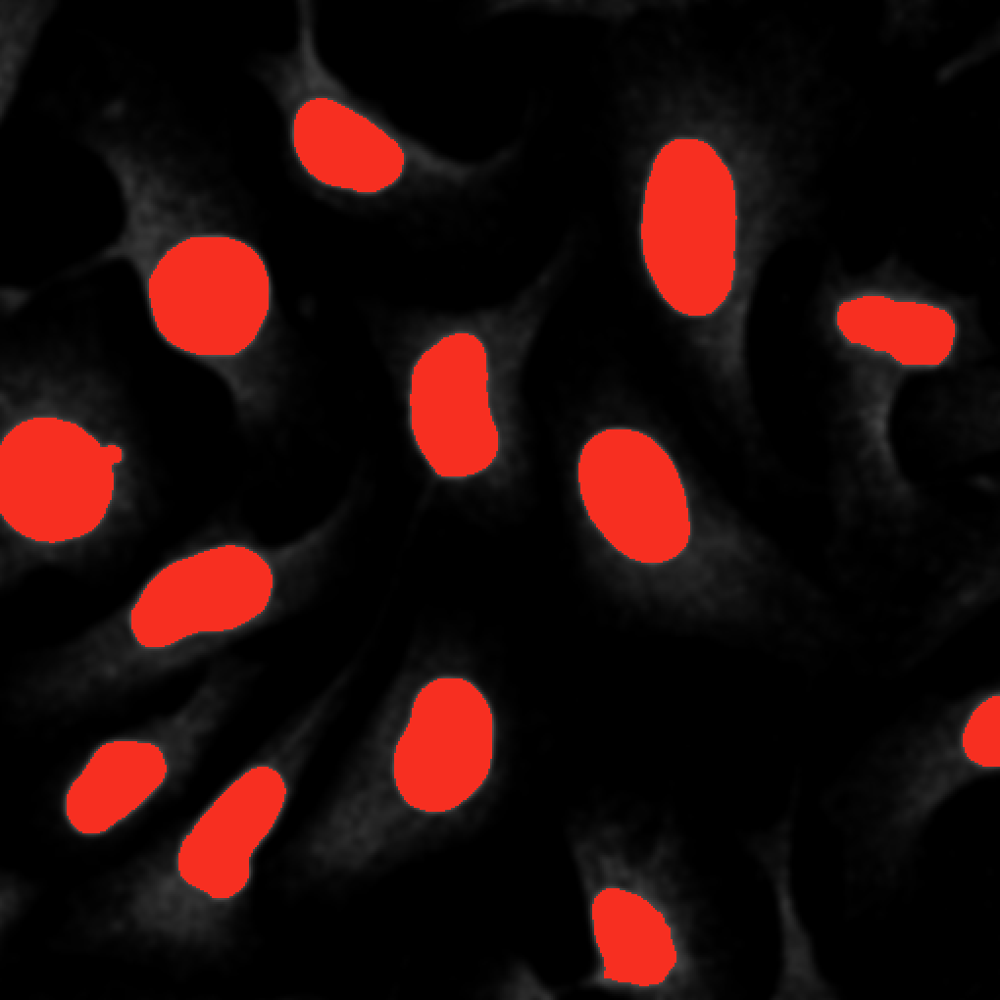
Fig. 36 Filtered and thresholded Nuclei_patchy.tif image#
Post-processing of segmentation results#
After thresholding, one can use morphological operations to clean up the segmentation. For instance, one can use Process > Binary > Open to remove small objects from the binary mask. An opening consists of an erosion followed by a dilation. The erosion removes small objects, and the dilation restores the shape of the remaining objects.
One can also use Process > Binary > Close to close small holes in the objects. A closing consists of a dilation followed by an erosion. The dilation closes small holes, and the erosion restores the shape of the objects.
Machine-learning based segmentation#
For more complex segmentation tasks, or when finding the right filters to preprocess an image before segmentation becomes difficult, one can use machine-learning based approaches. Fiji offers the Trainable Weka Segmentation tool that allows one to train a classifier based on a few user-provided annotations.
{kind=link}
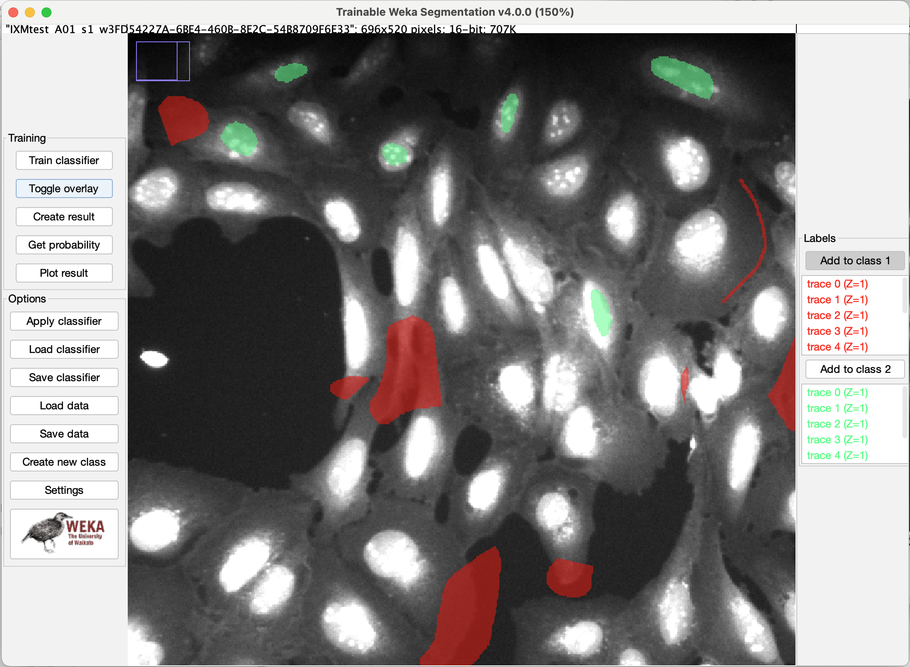
Fig. 37 The Trainable Weka Segmentation tool#
Load the image data/fiji/machine_learning/er_01.tif and open the Weka tool from Plugins > Segmentation > Trainable Weka Segmentation.
You can use any of the available tools to annotate a few pixels of the image as belonging to the background class (class 1) and a few pixels as belonging to the ER class (class 2).
Press the Train classifier button to train a model based on your annotations. The result of the classification of the entire image will be shown, and you can toggle between the segmentation and the original image by pressing the “Toggle overlay” button. Segmentation results can be improved in an iterative process by adding more annotations and retraining the classifier. Once you are satisfied with the result, you can create a binary mask by pressing the Create result button.
The trained model can be saved and reloaded later to segment other images of the same type. Sometimes it is useful to train a model based on a few images. This can be achieved by using the “Save data” and “Load data” buttons to include annotations from multiple images in the training set.
{kind=link}
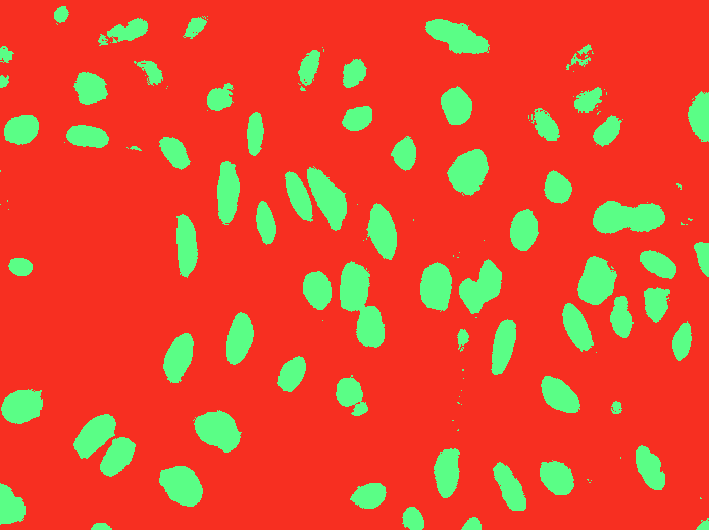
Fig. 38 Given the difficulty of the segmentation task, the Weka tool performs quite well! The result can be post-processed with morphological operations to clean it up a bit.#
Local maxima detection#
Sometimes, we only need to count objects in the image and do not need a precise segmentation of their boundaries.
Open the image data/fiji/segmentation/Cell.tif.
{kind=link}
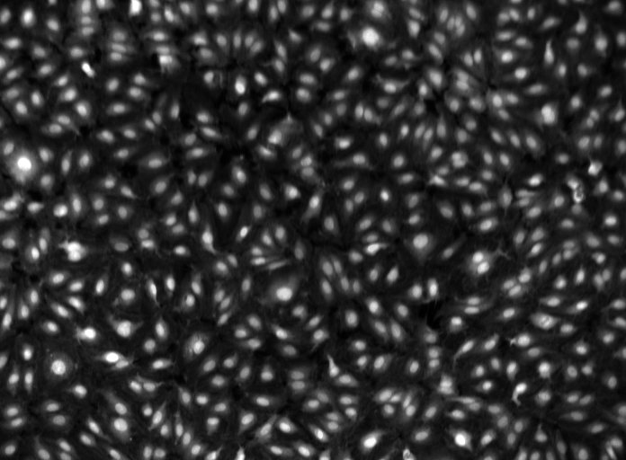
Fig. 39 Cell.tif image#
Segmenting the cells is tricky, since their cytoplasms are dim and the cells are very close to one another. An easier way to count the cells is to count their nuclei.
Go to Process > Find Maxima....
{kind=link}
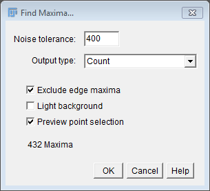
Fig. 40 Find Maxima settings#
Enable the preview and play with the Noise tolerance until you see one cross per nucleus.
{kind=link}
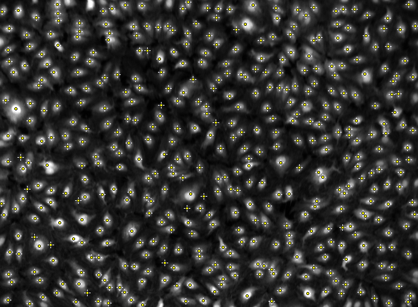
Fig. 41 Find Maxima preview#
Once you are satisfied, hit OK.
{kind=link}
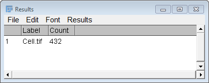
Fig. 42 Find Maxima results#
Morphology#
We will look at some applications of morphology in Fiji by loading and badly segmenting the image data/fiji/morphology/actin.tif.
Fig. 43 Actin.tif#
Use the Image > Adjust >Threshold tool to segment the image with the Moments algorithm. Hit Apply to create a binary mask.
{kind=link}
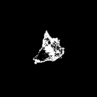
Fig. 44 (Badly) segmented Actin.tif#
If you analyze the result of this segmentation (Analyze > Analyze Particles...) you will see that there are 24 distinct objects in the binary mask (more on Measurements later in the course).
{kind=link}
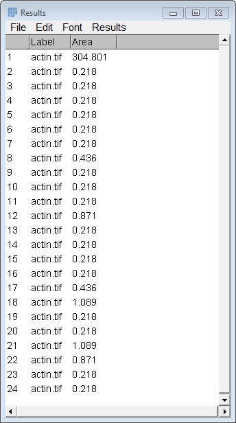
Fig. 45 Initial analysis#
Obviously, there is only one cell in the image, and our segmentation failed to recognized that.
Dilation#
We will start by running one dilation step on the image. Pick Process > Binary > Dilate.
{kind=link}
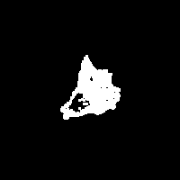
Fig. 46 Dilated Actin.tif#
Hole filling#
Then, we fill the remaining holes with Process > Binary > Fill Holes.
{kind=link}
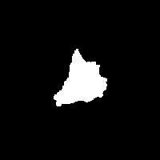
Fig. 47 Filled Actin.tif#
Erosion#
Since the dilation step extended the outline of the cell outward, we would overestimate the area of the cell if we were to measure it now. Therefore, we run an erosion step to bring the cell outline back to the original position. Use Process > Binary > Erode.
{kind=link}
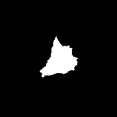
Fig. 48 Eroded Actin.tif#
Now we get a better result from our analysis:
{kind=link}
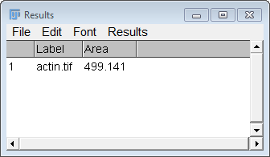
Fig. 49 Measurement on processed Actif.tif#
Measurements#
We have seen a few of the fundamental image processing concepts that we can use to manipulate our images for various types of applications. In this course, we are interested in extracting measurement data from our images. We are scientists after all!
In the next sections, we will see a few examples of image analysis workflows.
Time series analysis from manual ROIs#
In this example we will analyze intensity spikes in a calcium flux experiment. Open the image ./data/fiji/measurements/manual_rois/Calcium Flux.tif.
{kind=link}
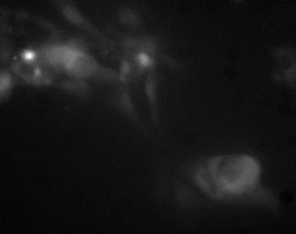
Fig. 50 Calcium flux time series#
It you scroll through time using the time slider at the bottom of the image, you will see that the signal intensity within the cellular cytoplasm flashes over time. How can we plot an intensity profile?
Pick the oval ROI from the Fiji toolbar.
Fig. 51 ROIs in the Fiji toolbar#
Draw the ROI in one of the flashing regions.
{kind=link}
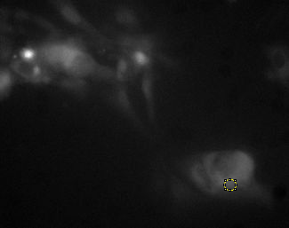
Fig. 52 Our ROI#
Run the Image > Stacks > Plot Z-axis Profile command to get a line profile.
{kind=link}
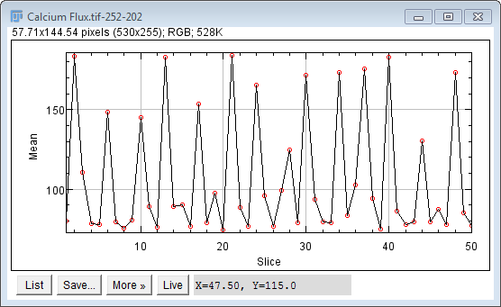
Fig. 53 Line profile#
Hit the List button to see the corresponding mean gray values in the Plot Values table.
{kind=link}
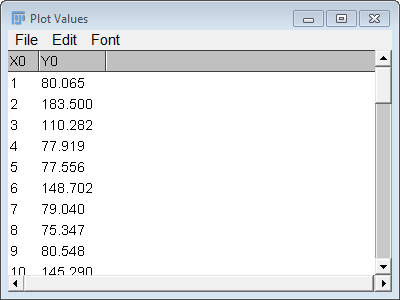
Fig. 54 Line profile values#
What if you want to measure more than one ROI at a time? You can use the ROI Manager (Analyze > Tools > ROI Manager...) to keep track of all the ROIs you add to an image.
After drawing a ROI, hit the t key or push the Add button on the ROI manager to add current ROI to the list of ROIs on the image. If the original names are a bit confusing, you can hit the Rename button and give them more useful names.
{kind=link}
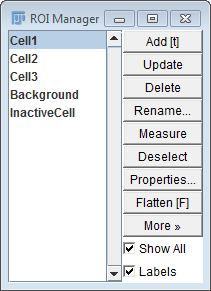
Fig. 55 ROI Manager in action#
By checking the Show All option, all ROIs are shown on the image at the same time; otherwise only the active one is shown.
{kind=link}
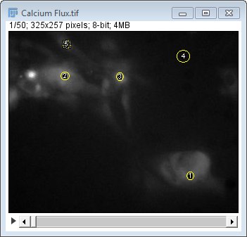
Fig. 56 Multiple ROIs on the image#
Please notice that besides three flashing cells (Cell1, Cell2, and Cell3), we also added a Background ROI for the image background (to check how the global intensity in the scene changes over time), and an InactiveCell ROI to investigate what happens within a cell that does not seem to do much.
In Analyze > Set Measurements check the Mean gray value measurement as follows:
{kind=link}
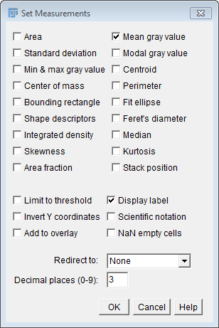
Fig. 57 Set measurements#
To measure over many ROIs at once, click on the More >> button in the ROI Manager and then pick Multi Measure (also, make sure to Deselect any ROIs you have selected in the ROI Manager) .
{kind=link}
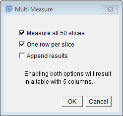
Fig. 58 Multi Measure options#
This time you get no plot, but 5 columns that you can then export into your favorite spreadsheet tool for plotting.
{kind=link}
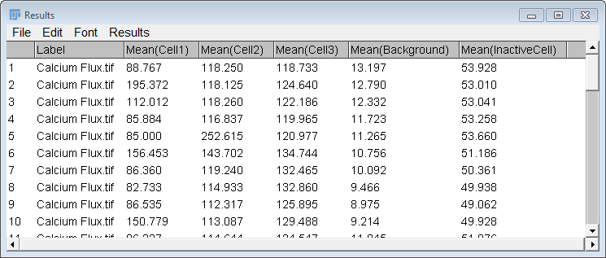
Fig. 59 Plot values for multiple ROIs#
To measure just the active ROI in the image, you can simply hit Measure in the ROI Manager.
Time series analysis from automatic ROIs#
Placing one or two ROIs in an image is an acceptable effort, but if one has to analyze hundred of cells, it quickly becomes tedious and error-prone.
In the Segmentation section we saw how to extract a binary mask of all the cells in an image. Let’s do something similar here for the analysis of calcium spikes in many cells at once.
Open the image data/fiji/measurements/auto_rois/Calcium Sensing.tif.
{kind=link}
Fig. 60 The Calcium Sensing image#
Going through the time series, we see that the cells do not move. Our strategy, then, is to create a mask for each cell that we can use to extract measurements over time.
Start by creating a maximum intensity projection of the data set via Image > Stacks > Z Project... using the following parameters:
{kind=link}
Fig. 61 Max intensity projection parameters#
The max intensity projection algorithm creates a 2D image \(I\) from a 3D stack \(S\), by storing at each position \(I(x, y)\) the maximum intensity \(i_{max} = \max_{z=1}^{z=z_{max}}(S(x, y, z))\).
{kind=link}
Fig. 62 The maximum intensity projection#
To create the mask, we can run:
a Gaussian filter (
Process > Filters > Gaussian Blur...with \(\sigma=1 \mu m\))a Li threshold (
Image > Adjust > Threshold)the Watershed algorithm (
Process > Binary > Watershed)
This should be our current result:
{kind=link}
Fig. 63 The mask#
Now, we can create a particle for each cell by running Analyze > Analyze Particles...
{kind=link}
Fig. 64 Analyze particles#
We set a filter on the size (50-Infinity) to remove small debris from the segmentation and tick the Add to Manager check box to make sure to add all the generated ROIs to the ROI Manager.
{kind=link}
Fig. 65 The ROI Manager with the extracted masks#
You should probably add a manual ROI to the background as well (ROI 21 in the figure below).
{kind=link}
Fig. 66 Obtained ROIs (ROI 21 is the manual background)#
To transfer the ROIs to the original time series, we can activate the window where we loaded the original Calcium Sensing.tif image and click on Show All in the ROI Manager. The ROIs will now be associated to the Calcium Sensing.tif image. Alternatively, you could first hit More >> Save... in the ROI Manager to save the ROIs to disk and then load them from disk via More >> Open... (clear the listed ROIs first!).
Finally, we can measure our calcium profiles via More >> Multi Measure (enable One row per slice).
{kind=link}
Fig. 67 Obtained ROIs (ROI 21 is the manual background)#
Image arithmetics#
Often, it is very useful to use arithmetic operations between images; for instance, to subtract the estimated background from the image to correct for shading artifacts; or to mask one channel with another.
In this section, we will see an example of masking.
Open data/fiji/arithmetics/cell_2_channels.tif.
{kind=link}
Fig. 68 2-channel image#
With Image > Colors > Split Channels we extract each of the two channels to its own window. Make a copy of the red channel with Image > Duplicate: we will need it later.
{kind=link}
Fig. 69 Split channels#
Now, we Gaussian filter (Process > Filters > Gaussian Blur) both channels with \(\sigma=1\) pixel.
{kind=link}
Fig. 70 Gaussian blur#
Then we apply the Otsu threshold Image > Adjust > Threshold... and close remaining holes inside the cell cytoplasm with Process > Binary > Fill Holes. We should now have two masks as depicted below.
{kind=link}
Fig. 71 The masks for each of the channels#
Now, we would like to measure the signal intensity in the cell cytoplasm without taking into account the area covered by the nucleus. For this purpose, we can create a new mask that represents the difference of the two we just created. We can achieve this in two ways. The first way is by subtracting one image from the other. Open Process > Image Calculator...:
{kind=link}
Fig. 72 Subtact one mask from the other#
The second way, is by running the logical operator XOR on the images. XOR, or exclusive OR is a binary operation that returns true only if the two operands have different values (i.e., one is true and the other is false). In a binary mask, this means that if two pixels at a given location are both black or both white, the result will be black; only if two pixels have different values (which in our case is the area of the cell not covered by the nucleus) we will get a white pixel.
Both operations return the same result:
{kind=link}
Fig. 73 Result of the image arithmetics operation#
Now we can use this mask to extract the mean intensity of the cell cytoplasm. Select the newly created mask and run Analyze > Set Measurements: make sure to redirect the measurements to the copy of the red channel we made in the beginning.
{kind=link}
Fig. 74 Configure measurements to act on the desired image#
And now hit Analyse > Analyze Particles. Make sure to disable Include holes.
{kind=link}
Fig. 75 Analyze particles#
The mean intensity of the cytoplasm is returned.
{kind=link}
Fig. 76 Final result#
Programming Fiji#
There are fundamentally two ways of extending the functionality of Fiji:
Macros are simple programs stored as
.ijm(ImageJ Macro) files and written in a language similar to Java. Macros can contain control flow structures (if,while, …), operators (+,-, …) and built-in functions (or commands). Macros can call other macros.For a list of macro functions, pick
Help > Macro functions...or go to https://imagej.nih.gov/ij/developer/macro/functions.htmlThe official Reference guide can be found at https://imagej.nih.gov/ij/docs/macro_reference_guide.pdf
Plug-ins are faster, more flexible and more powerful than macros and are written in the Java programming language. They have much deeper access to the core of Fiji but are also much more complex to develop.
In this course we will learn how to write macros.
Macro programming#
A macro is a simple program that automates a series of ImageJ commands. In its simplest form, we do not even need to write any code!
Let’s open an image and proceed with creating our first macro! Make sure you have an image open in Fiji; if not, pick data/fiji/programming/macro1/Nuclei.tif.
We can record a macro by choosing Plugins > Macros > Record… and performing a series of operations in Fiji. Each operation (with its selected parameters) will be automatically added to the recorder.
Lets pick Image > Adjust > Threshold.... You should see the corresponding macro calls being added to the Recorder. Then, pick Analyze > Set Measurements... and uncheck everything but Area, Mean gray value and Min & Max gray value. Also, set Redirect to None and Decimal planes (0 - 9) to 3. Finally, run Analyze > Analyze Particles….
{kind=link}
Fig. 77 The macro recorder#
Once we are done adding commands to the macro, we can give a Name to the macro (in this case First_Macro.ijm), hit the Create button and get the new macro script opened in the Script editor.
{kind=link}
Fig. 78 The script editor#
The original macro is now listed in the script editor, but it is not yet saved! Before doing anything else, then, we hit File > Save as... and write it to a folder of our choice.
The scripting editor is very powerful and, at the time of writing, supports ten different programming languages! For our course, we will focus on the original ImageJ Macro Language (IJ1 Macro).
{kind=link}
Fig. 79 The scripting languages#
Once we are ready with our first macro we have a few options:
Hit the Run button and the macro will be run on the currently active window. If we haven’t touched anything in the meanwhile, it will be the same image we used to create the macro. You can open another image, and then run the macro on that one.
To add it to Fiji, select
Plugins > Macros > Installand choose the file you just saved. A new entry will be added to thePlugins > Macrosmenu. Notice, however, that by installing it this way it will be gone when you restart Fiji. To make it permanent, copy the macro file intoFiji.app/plugins/Macros, optionally in a subfolder.
A simple example#
Let’s open the image data/fiji/programming/macro1/Nuclei.tif.
{kind=link}
Fig. 80 The ‘Nuclei.tif’ image#
Then, we start recording our macro: Plugins > Macros > Record....
Apply threshold#
Launch the Threshold tool via Image > Adjust > Threshold. Pick the Li algorithm, since it works robustly with images with a broader range of intensities, check the Dark background option, and hit the Apply button. The Recorder window should look more or less like this:
{kind=link}
Fig. 81 The thresholding steps#
Apply watershed#
Some of the nuclei are fused into individual objects. To separate them, we run Process > Binary > Watershed. This will add the run("Watershed"); command to the Recorder:
{kind=link}
Fig. 82 The watershed command is added#
Perform measurements#
Launch the measurement selection tool from Analyze > Set measurements... and enable Area and Display label as follows:
{kind=link}
Fig. 83 Set measurements#
Now launch Analyze > Analyze Particles... and configure it as in the figure below:
{kind=link}
Fig. 84 Analyze particles#
At this stage, the Recorder window should look like this:
{kind=link}
Fig. 85 Updated Recorder window#
If you have any calls to selectWindow(), please remove them.
Save the macro and re-run it#
Now give a name to the macro (such as Cell_Count.ijm) and hit Create to open it in the Script Editor. Save it to a place of your liking.
{kind=link}
Fig. 86 Updated Recorder window#
You are now ready to run the macro. Make sure the Nuclei-1 image is the one selected and hit Run. You should get a Summary table like this:
{kind=link}
Fig. 87 Summary of the measurements on Nuclei-1#
Now open the image data/fiji/programming/macro1/Nuclei 02.tif and Run the macro again. You should get an additional entry in the Results table:
{kind=link}
Fig. 88 Summary after running the macro again#
A more complex example with some coding#
Often, one can record a macro with a series of operations performed on one image, and then apply that same series of operations on another image and everything will work as expected. In some cases, however, the steps that are performed on the images might need to be somewhat changed or adapted and cannot be applied unmodified on different images.
The ImageJ macro language allows us to introduce some intelligence in our code to cope with these situations.
To keep track of pieces of information or values that could be different in different runs of a macro, we need to use variables. A variable is a named tag for a value that can change (it’s supposed to be variable, after all) across runs of a macro or even within the same run.
Let’s open the Script Editor via Plugins > New > Macro or File > New > Script (in this case, make sure to set the Language to IJ1 Macro).
We will replicate the example from the Fiji Training Notes to merge three images into an RGB image.
First, we will write some comment at the top of the file to document what the macro is supposed to do. We write comments by prepending them with a double slash: //. This informs the macro interpreter that this is not code, and should not be executed. It is there for us, to remember what the code is going to do.
{kind=link}
Fig. 89 Code comments#
Notice that the interpreter paints the comments green to easily distinguish them from the rest of the code.
Prompt the user to pick an image#
In contrast to the previous macro, this time we need additional information to successfully process the sequence of operations. We need to know which (open) images to assign to the DAPI, the FITC and DIC channels of our RGB image.
As our first operation, we will ask the user to pick the DAPI image (i.e., to click on it, so that it becomes the active image).
{kind=link}
Fig. 90 Prompt the user#
Notice that the interpreter painted waitForUser in yellow and Select DAPI image in purple. Yellow indicates Fiji commands recognized by the interpreter; purple is used for strings of text. Strings usually convey information for the user of the program: in this case it explains what to do.
{kind=link}
Fig. 91 The select image Dialog#
How do we pass the information on which image should be assigned to the DAPI channel to the program? We need to store the window title into a variable.
{kind=link}
Fig. 92 Store the image title into a variable#
Notice that the variable is painted black.
Now we can do the same for the other two images:
{kind=link}
Fig. 93 Picking the other two images#
Open the images DAPI.tif, DIC.tif and FITC.tif from data/fiji/programming/macro2 and then Run the macro.
You should be able to select each of the three images, but then nothing will happen! We still haven’t added any action to perform on the images!
Merge the images#
To conclude our macro, we need to pass the three selected image names to the Merge Channels command as input arguments as follows:
{kind=link}
Fig. 94 Merging the channels#
The run() function runs any of the command that are listed in the various Fiji menus. After the command name, in this case "Merge Channels..." (from the Image > Color menu), we must specify the list of parameters the command takes. When running those commands from the menus, a dialog will open for the interactive setting of the requested values. When running the command in a macro via the run() function, those same parameters must be explicitly added to the call.
How do we know which parameters are to be passed? The simplest way is to launch a command from the Fiji menus while recording a macro. The command will be added to the macro, and its parameters can then be adapted.
For instance, recording Image > Color > Merge Channels... and passing the following parameters:
{kind=link}
Fig. 95 Recording Merge Channels…#
adds this to the macro:
run("Merge Channels...", "c2=FITC.tif c3=DAPI.tif c4=DIC.tif ignore");
The argument is one long string: "c2=FITC.tif c3=DAPI.tif c4=DIC.tif ignore". How can we build the same string in our macro when the file names are stored in variables? We need to build the string by concatenating string and variables.
If nameDAPI is "FITC.tif", the string concatenation (with the operator +) "c2=" + nameFITC results in the string "c2=FITC.tif". The complete command then looks like this:
run("Merge Channels...", "c2="+nameFITC+" c3="+nameDAPI+" c4="+nameDIC+" ignore");
This is almost the final version and it will work as long as the names of the images do not contain blank spaces. To be robust against this case, we enclose the image names within square brackets:
run("Merge Channels...", "c2=["+nameFITC+"] c3=["+nameDAPI+"] c4=["+nameDIC+"] ignore");
Try!
Batch processing#
Batch processing allows to analyze many images without user intervention. Images are automatically loaded and processed from a user-specified directory and the results are stored in another folder.
Let’s consider the Cell_Count.ijm macro we created earlier.
Fig. 96 The original Cell_Count.ijm macro#
How should we modify it so that we can run it in batch mode over a directory full of images?
Let’s open the original Cell_Count.ijm macro and save it as Cell_Count_Batch.ijm.
At the very top of the macro, we add code to ask the user to pick the source directory to process:
{kind=link}
Fig. 97 Pick the source directory#
Detailed instructions on how the getDirectory() function can be used are found in the macro functions help at https://imagej.nih.gov/ij/developer/macro/functions.html#G (or by picking Help > Macro Functions... and changing to the letter G).
Then we get all files in the directory and we sort them.
{kind=link}
Fig. 98 Get the sorted file list#
After variables, we are now going to use another fundamental tool of the macro (and any other) programming language: control flow. In particular, we will look at the for loop:
for(i=0; i<10; i++) {
... statements ...
}
The for loop repeats a series of statements a certain number of times. The statements that belong to the for loop are contained between the two curly braces { and }. At each iteration of the loop, a counter is updated (in our example, the counter is the variable i). The counter is initialized to a certain value (here, at i=0) and is incremented at the end of each iteration (the strange notation i++ means ‘add one to i’) until it reaches a certain stopping value (in our case 9, since the loop can only run as long as i is < 10).
It is common to see for loops with counters initialized at 0, since many data structures (such as lists or array) have an internal counter that starts at 0. To access the first element in a list, indeed, one uses the index 0 (and not 1!).
To process all files in the list, we use a for loop that iterates from 0 to the length of the file list minus 1 (since we start from zero!):
for(i=0; i<list.length; i++) {
... statements ...
}
Each entry in the list corresponds to a file name from the picked directory. We now want to open each file in Fiji. For this we can use the open() function, that takes the full path of the file as an argument. In each iteration of the loop, we must then build the full path from the dir variable and the current list entry, like this:
{kind=link}
Fig. 99 Loop over files and open them#
If you run this macro on a directory full of images, you will open them all! Still, nothing will be done to those images. We need to move the original code that we wrote to process just on image into the for loop, so that the operations will be run on all images. We conclude the for loop by adding a run("Close All"); call to make sure that all windows opened within one iteration of the loop are closed before the next iteration is started.
{kind=link}
Fig. 100 Completed macro#
Run the macro and pick the folder data/fiji/programming/macro3. You should get the following output:
{kind=link}
Fig. 101 Output of the cell count batch macro#